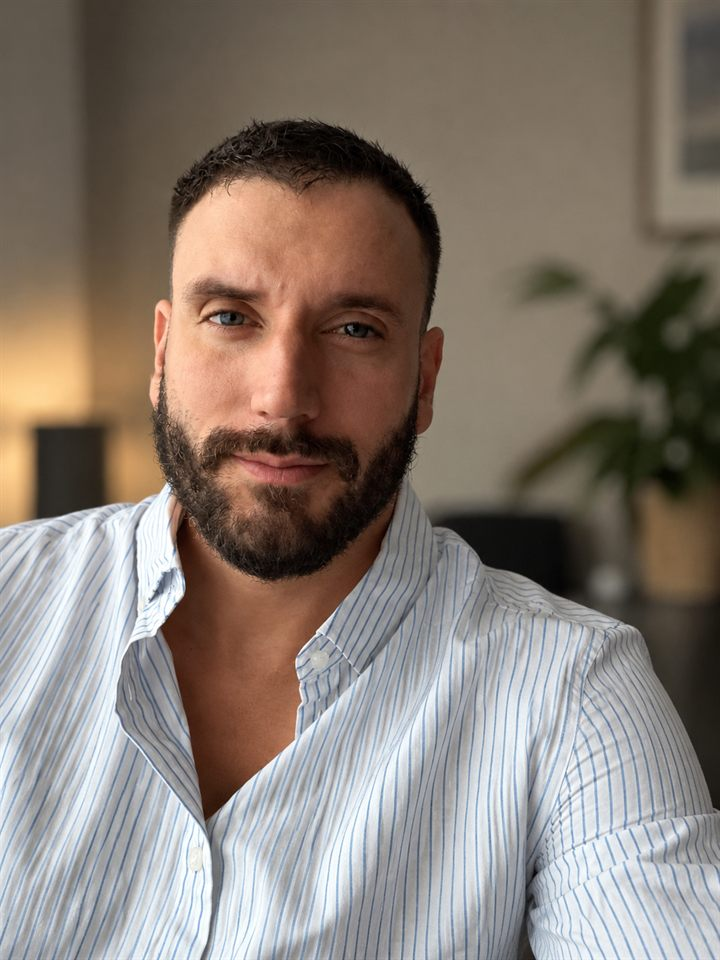

Psicólogo en Valencia · Online para España y Argentina
Un espacio para volver a encontrarte, estés donde estés.
Soy Nahuel Ríos, psicólogo clínico en Valencia, de orientación psicoanalítica con un enfoque integrador. Te ofrezco un espacio de terapia online, confidencial y sin juicios, para hablar de lo que te pasa, entender de dónde viene y encontrar nuevas formas de estar en tu vida.
Primera entrevista gratuita de 30 minutos para conocernos

La primera entrevista es gratuita: 30 minutos para conocernos, contarme qué te pasa y ver si quieres empezar.
Elegir día y horaA veces el malestar no tiene un nombre claro. Se siente como un nudo en el pecho, un cansancio que no se va o la sensación de no pertenecer a ningún lugar.
No hace falta tenerlo todo claro para empezar. La terapia es un espacio confidencial donde poner en palabras lo que te pasa, entender de dónde viene y encontrar otra forma de habitarlo.
Trabajo de forma online con personas que viven en España, en Argentina o en cualquier otro país, y que buscan un psicólogo que hable su idioma, en todos los sentidos.
En qué puedo ayudarte
Especialidades
Ansiedad
Ataques de pánico, preocupación constante, insomnio, sensación de alerta permanente o miedo a perder el control.
Saber másDepresión
Tristeza persistente, falta de energía, pérdida de interés, sentir que nada tiene sentido o que estás «en piloto automático».
Saber másProcesos migratorios
Duelo migratorio, desarraigo, soledad, choque cultural, culpa por la familia que quedó lejos y la pregunta de dónde está ahora tu lugar.
Saber másOtros motivos de consulta
Duelos, rupturas, crisis vitales, autoestima, dificultades en los vínculos, o simplemente sentir que algo no está bien y querer entenderlo.
Cómo trabajoPsicólogo para migrantes
Emigrar es empezar de nuevo. No tienes que hacerlo solo.
Como psicólogo argentino que vive en Valencia, conozco desde dentro lo que implica dejar atrás afectos, rutinas y una parte de quién eras.
- Duelo migratorio y síndrome de Ulises
- Soledad, nostalgia y sensación de no pertenecer
- Culpa y preocupación por la familia en el país de origen
- Crisis de identidad, idioma y choque cultural
- Decidir si quedarse, volver o seguir
Sobre mí
Escuchar lo que el síntoma intenta decir
Soy Licenciado en Psicología por la Universidad Argentina John F. Kennedy, con el título homologado en España y más de diez años de experiencia en salud mental, en instituciones terapéuticas y en consulta privada. Mi base es el psicoanálisis, un enfoque que no busca solo «apagar» el síntoma, sino entender qué lugar ocupa en tu historia y en tus vínculos. Cuando el momento lo pide, lo combino con herramientas de la terapia cognitivo-conductual, desde una mirada integradora y adaptada a cada persona.
La ansiedad, la tristeza o el desarraigo no son fallas que haya que esconder: son señales. En sesión las escuchamos con tiempo y sin juicios, para que puedas construir respuestas propias y más duraderas.
Mi propia experiencia migratoria me permite acompañar con una sensibilidad particular a quienes viven entre dos países, dos acentos y, muchas veces, dos versiones de sí mismos.
Formación y trayectoria
Más de diez años escuchando
Mi recorrido combina la formación psicoanalítica con años de trabajo en instituciones de salud mental, acompañando procesos individuales y grupales.
Experiencia clínica
- Actualidad
Psicólogo clínico en consulta privada
Valencia · OnlineTerapia individual online de orientación psicoanalítica, con herramientas cognitivo-conductuales e integradoras, para pacientes de España, Argentina y otros países.
- 2021 – 2023
Psicólogo, coordinador y orientador de grupo
Fundación Creciendo · Buenos AiresAdmisión de pacientes, entrevistas a familias, orientación de grupos con patologías de corte psiquiátrico y evaluación de la evolución de cada caso.
- 2022 – 2023
Acompañante terapéutico
Buenos AiresAcompañamiento terapéutico individual en actividades de la vida cotidiana.
- 2017 – 2020
Psicólogo, coordinador y orientador
Instituto Un Lugar · Buenos AiresCoordinación de asambleas y espacios grupales terapéuticos, talleres y seguimiento de procesos terapéuticos individuales y grupales.
- 2015 – 2017
Guardias y talleres terapéuticos
Hogar Seguir Creciendo · Buenos AiresGuardias clínicas, coordinación de talleres terapéuticos y acompañamiento semanal de pacientes.
- 2015
Acompañante terapéutico
Hospital Neuropsiquiátrico Braulio A. Moyano · Buenos AiresPráctica de acompañamiento terapéutico en el ámbito hospitalario.
Formación
- Actualidad
Título de Psicólogo homologado en España
Reconocimiento oficial en España del título universitario argentino.
- 2021 – actualidad
Investigación en psicoanálisis
APOLAParticipación en espacios de investigación y formación continua en psicoanálisis.
- 2021 – 2023
Evaluación psicológica
Entrevistas y administración de test proyectivos y psicométricos en procesos de selección.
- 2021 – 2022
Miembro adherente
Escuela Freudiana de Buenos Aires (EFBA) - 2021
Seminarios de psicoanálisis
Escuela de la Orientación Lacaniana (EOL) - 2018
Licenciatura en Psicología
Universidad Argentina John F. Kennedy · Buenos Aires
Empezar es sencillo
Cómo empezamos
Reservas
Eliges día y hora en la agenda online. Ves los horarios en tu zona horaria.
Entrevista gratuita
30 minutos sin coste: me cuentas qué te trae, te explico cómo trabajo y vemos si te sientes cómodo.
Acordamos
Definimos juntos frecuencia, horario y la forma de trabajo que mejor se ajusta a ti.
Proceso
Sesiones de unos 50 minutos por videollamada, desde donde te sientas cómodo.
Terapia online en español
Estés donde estés
Psicólogo en Valencia y en toda España
Vivo y trabajo en Valencia. Atiendo online a quienes viven aquí, en Madrid, Barcelona, Málaga o cualquier ciudad, y a argentinos y latinoamericanos que se instalaron en España.
Psicólogo online en Argentina
Sesiones en horario argentino para quienes viven en Buenos Aires o en cualquier provincia, y para quienes están pensando en emigrar.
Hispanohablantes en el mundo
Si vives en otro país y quieres hacer terapia en tu idioma, con alguien que entiende lo que es estar lejos.
Preguntas frecuentes
Antes de empezar
¿La primera sesión tiene coste?
No. La primera entrevista es gratuita y dura 30 minutos. Sirve para conocernos, que me cuentes qué te trae, resolver tus dudas y decidir con tranquilidad si quieres empezar el proceso. No implica ningún compromiso.
¿La terapia online funciona igual que la presencial?
Sí. La investigación muestra resultados comparables en ansiedad y depresión. Lo central es el vínculo terapéutico y la regularidad de los encuentros, no la pantalla. Además, permite sostener el tratamiento aunque te mudes o viajes.
¿Eres psicólogo en Valencia?
Sí, vivo y trabajo en Valencia. Las sesiones son online, así que puedes hacer terapia desde cualquier barrio de Valencia, desde el resto de España o desde otro país, sin desplazamientos.
¿Atiendes a personas que viven en España y en Argentina?
Sí. Las sesiones son online, en español, y coordino horarios compatibles con España, Argentina y otros países. Tengo el título de psicólogo homologado en España.
¿Qué enfoque utilizas?
Mi base es el psicoanálisis: no me quedo solo en eliminar el síntoma, sino que busco entender qué dice ese malestar de tu historia y de tu forma de vincularte, para que el cambio sea más profundo y duradero. Cuando hace falta, lo combino con herramientas cognitivo-conductuales, con un enfoque integrador adaptado a cada persona. Más sobre cómo trabajo.
¿Cuánto dura cada sesión y con qué frecuencia?
Las sesiones duran alrededor de 50 minutos. Habitualmente se trabaja con una frecuencia semanal, que se acuerda en la primera entrevista según cada caso.
¿Cómo reservo la primera sesión?
Puedes elegir día y hora directamente en la agenda online o escribir a psinrios@gmail.com.
Primer paso
Hablar de lo que te pasa ya es empezar a cambiarlo
La primera entrevista es gratuita y dura 30 minutos. Reserva en el horario que mejor te venga, o escríbeme si tienes dudas antes de empezar.
o escribe a psinrios@gmail.com · Instagram @psi.nrios